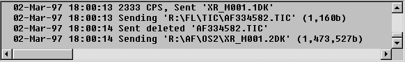

The Last 200 entries of the mailing system log file are stored in the Log Window. The window scrolls so that the last entries of the log are always visible. If the Log Window is focused upon, the automatic scrolling is stopped to make the log inspecting possible and comfortable; automatic scrolling is resumed as soon as another element of the Mailer Window is focused upon.
